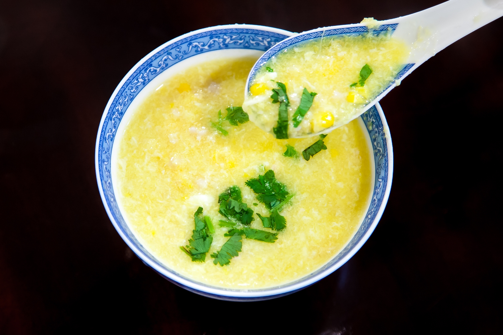

back
Savoury Corn Soup Recipe

A savoury corn soup recipe with Chinese Egg Drop soup inspired flavours
Ingredients
- One can of corn kernels
- One tablespoon of chicken powder
- One tablespoon of corn starch
- One egg, scrambled
- White Pepper, to taste
Steps
- Bring a small pot of water to a boil
- Add in a whole can of corn kernels
- Once it starts to boil again, add in the chicken powder
- Taste to measure the savouriness of the soup, if it isn't flavourful enough add another tablespoon of chicken powder
- Once you are satisfied with the taste, take the soup off the heat and slowly add in the scrambled egg, making sure that it is going in the soup as a strand in a circular motion
- Mix the corn starch with one tablespoon of water thoroughly to make a slurry making sure not to leave any lumps as well as clumps of dry corn starch and add to the soup, stir constantly for 15 seconds
- The soup is now ready to serve, add white pepper to taste and enjoy!